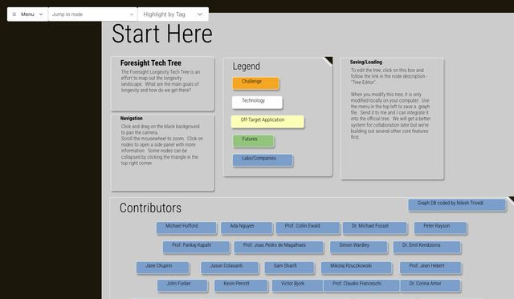
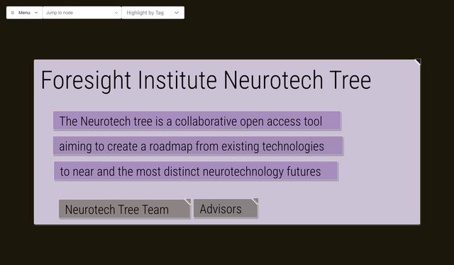
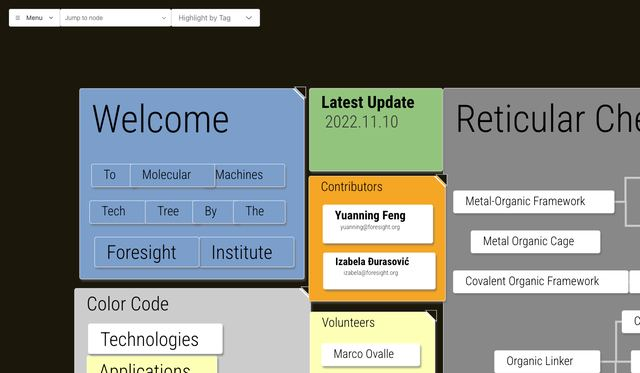
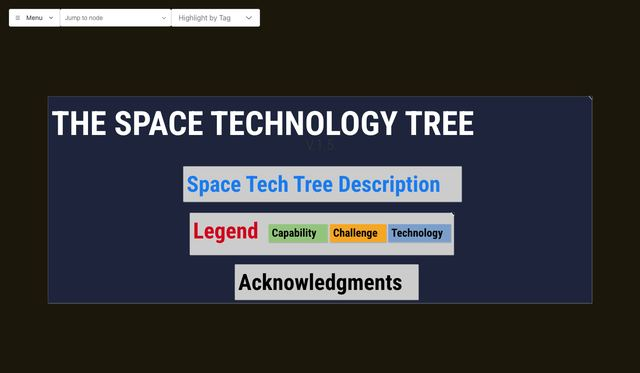
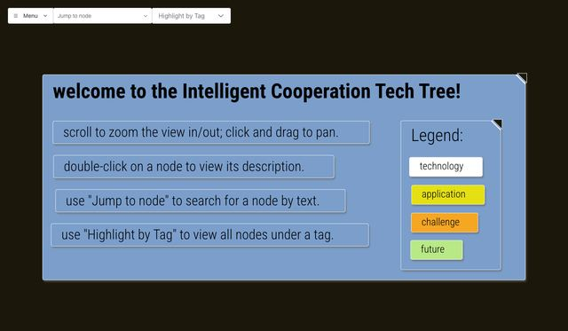
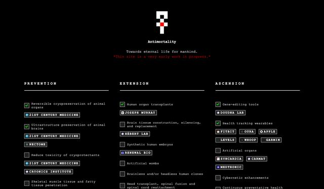

Real Life Tech Tree › Inspirations
Tech tree inspirations
Two earlier attempts to map the technologies between us and much longer lives, which inspired the Real Life Tech Tree. Neither is online at its original address any more, so copies are kept here, each on its own page, unchanged except where noted.
Foresight Institute Tech Trees
The Foresight Institute built these maps in 2022 and 2023 with researchers in each field, starting with longevity and adding four more. Each is a graph of goals, the technologies and open challenges in the way, the "off-target" applications they would also serve, and the labs and companies working on them. Drag to pan, scroll to zoom, and click a node for its notes; use Jump to node to search and Highlight by Tag to pick out a kind of node. A bar along the bottom of each copy switches between the trees.

LongevityAbout 1,030 nodes: the hallmarks of aging, repair and replacement, preservation, and about 270 labs and companies
Neurotech313 nodes: therapies, brain-computer interfaces, biomarkers and clinical trials
Nanotech337 nodes: molecular machines and the chemistry behind them
Space722 nodes: propulsion, in-space manufacturing and resources, habitats, debris
Intelligent Cooperation170 nodes: machine learning, private computation and decentralized systemsFrom foresight-org/LongevityTechTree (commit 275517d, February 2023), whose README invites anyone to clone, fork or edit it; the repository has no formal license, and the trees remain Foresight's and their contributors'. The graph software is Grapher by Nilesh Trivedi. Changes in these copies:
- The pages load the Fluent UI components from an unversioned link, which now serves a newer, incompatible version, so they pin version 2.5.12, the one current when the trees were last updated.
- Grapher put a stray ";" before every label; it's removed.
- Highlight by Tag now works for tags with spaces in them, such as "private computation".
- The Space, Neurotech and Intelligent Cooperation trees open on their title boxes rather than an empty corner of the map, and links in the notes open in a new tab.
- The Longevity tree's links to Foresight's editor point to a copy here (editor); edits stay in your browser, as before, and can be saved as a file from the menu. A QR code for the old address is removed.
Antimortality

AntimortalityThree paths, nine milestones and 53 problems, with the groups working on eachAntimortality (2022), by Kai Micah Mills, lays out three paths to "eternal life for mankind": prevention (cryopreservation, so no one is lost while the rest is worked out), extension (curing aging and replacing the body) and ascension (enhancement, synthetic bodies and consciousness transfer). Each path is a checklist of concrete problems, ticked when solved, with the groups working on each.
From antimortality/website (commit 2eda231, November 2022), under the MIT License (copyright 2022 Antimortality). antimortality.com no longer serves it. Rebuilt from the same source with esbuild and Sass instead of Create React App, and with Font Awesome 5 loaded from cdnjs instead of the site's own Font Awesome kit; the content is unchanged.
What the Real Life Tech Tree took from them
- From both: open problems and steps toward each frontier technology, ticked off as they're solved, with who is working on each.
- From Foresight: the other things a technology would help with besides its main goal, and hallmark-level steps in aging research such as clearing senescent cells.
- From Antimortality: the intermediate steps toward reversible preservation, such as reviving a cryopreserved small mammal, and replacing the aging brain piece by piece.
- From Foresight's issue templates: a way to suggest a change to the tree.